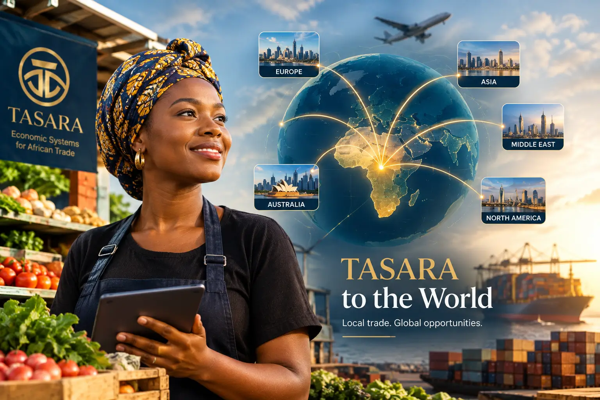

Structure for work that already happens every day.
A record of your work that stays with you.
Across Africa, a huge amount of real work and trade happens every day — people selling goods, offering services, running small businesses — but very little of it gets recorded, recognized, or rewarded in any lasting way.
TASARA exists to fix that. It gives everyday traders, sellers, and skilled workers an identity within a trusted network — so their work gets seen, tracked, and valued over time.
It's not a bank, and it's not a cryptocurrency. You still get paid the same way you always have. TASARA is the layer underneath that — the part that remembers who you are, what you've done, and makes sure that counts for something.
Clear boundaries.
No. TASARA doesn't replace the Naira or any national currency. You pay for goods and services in your local currency as normal. Omni is an internal receipt and voucher system used only within the TASARA network — not a tradable public asset.
Signing up as a System Participant is free. Becoming a Merchant Steward involves a Liquidity Stake tied to your chosen tier — it funds your initial Omni issuance and registers you as a vested participant.
TASARA is not a marketplace. It doesn't facilitate transactions between buyers and sellers. Instead, it records and validates the transactions that already happen — giving them a persistent identity and track record within the network.

Run day-to-day by someone who builds systems, not just plans.

Lisa-Ann Herbert
Lisa-Ann Herbert is a dynamic professional with expertise in administration, business development, strategic planning, project coordination, communication, and relationship management. She is passionate about building effective systems, connecting people and opportunities, and turning ideas into measurable results.
TASARA is an initiative and trademark of Iron Mint Stewardship Limited (RC 9380856), founded by Emmanuel Adakole Michael.
From one town, outward.
Otukpo, Nigeria — the active pilot, where the first Merchant Stewards are being verified and onboarded.
Lagos, Abuja & Port Harcourt — expansion to Nigeria's major urban hubs.
West Africa, then wider Pan-African replication — the same structure, taken continental.